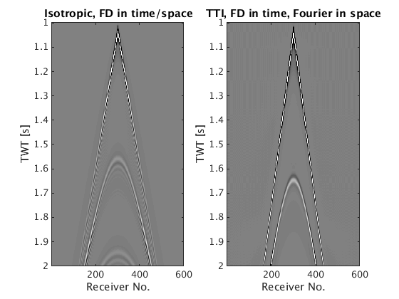
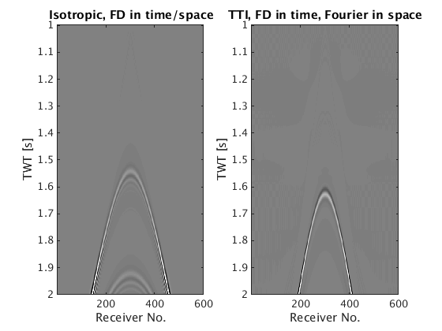

2D time-domain acoustic anisotropic and acoustic isotropic modelling and linearized modelling demo
The modeling operator is based on a star 1D stencil of order 2,4 or 6. It solves the system in parallel over sources . Source injection and receiver sampling is done via cubic interpolation and exponential damping over a 3x3 square around the source location. The Jacobian is derived by linearizing the discretized system and its forward and adjoint action is calculated via the adjoint-state method.
The basic syntax of the modeling operator is data = Gen_data(m,Q,model,density,anisotropy)|, where
- m is a vector with a gridded slowness-squared model [km^2/s^2],
- Q is a vectorof that defines the source,
- model is a struct with various other parameters,
- data is a vectorized data-cube (receiver x source x time),
- density is the density
- anisotropy are the thompsen parameters
We illustrate the basic modeling capabilities on a simple layered model.
Contents
medium parameters
o = [0, 0]; % Origin n = [162, 600]; % Size of the domain in grid points N = prod(n); d = [15, 15]; % Grid size of the original model v = ones(n)*1.400; % velocity [km/s] v(50:100,:) = 2.000; v(101:end,:) = 3.000; v = v(:); m=1./v.^2; % square slowness % Thompsen parameters ani.delta = ones(N,1)*0.3; ani.epsilon = ones(N,1)*0.2; ani.theta = ones(N,1)*pi/9;
Model containing acquisition geometry and modelling parameters
model.o=[o 0]; %Origins of the axes [m] model.n=[n 1]; %Number of grid points for each dimension (excluding boundaries) model.d=[d d(1)]; model.ddcompx=1; % Domain decomposition x direction model.ddcompy=1; % Domain decomposition y direction model.ddcompz=1; % Domain decomposition z direction model.f0=0.015; % in [kHz] model.xsrc =4500; % Source position along x axis in [m] model.zsrc= 10*ones(size(model.xsrc)); %Source coordinates along z axis [m] model.ysrc=0*ones(size(model.xsrc));%Source coordinates along y axis [m] (still necessary for 2D will be removed) model.xrec = 0:15:9000;%Receivers coordinates along x axis [m] model.zrec=10; %Receivers coordinates along z axis [m] model.yrec=0; %Receivers coordinates along y axis [m] model.T=2000; %Acquisition duration [ms] model.freesurface=0; % Freesurface ( 0 : no freesurface, 1 : freesurface) model.space_order=2; % Space discretization order (2,4 or 6 only for now) model.type='full'; % Type of aquisition : 'marine' or 'full' (split-pread) model.gppwl = 7; % grid points per wave length (only for anisotropy)
Acoustic isotropic modeling
[m1,model1]=Setup_CFL(m,model); % Setup dt, new grid size and new model for given peak frequency model1.NyqT=0:4:model1.T; % Shot record time axis q=sp_RickerWavelet(model1.f0,1/model1.f0,model1.dt,model1.T); % Source tic; dataT1=Gen_data(m1,model1,q); % Generate data, can also be called with Gen_data(m2,model2,q,[],[]) toc
CFL conditions gives dt = 1.9092ms and d = 9 9 9 m Velocity interpolated on new grid shot = 4500 Acoustic isotropic Elapsed time is 9.217471 seconds.
Acoustic anisotropic modeling
[m2,model2,~,ani2]=Setup_CFL(m,model,[],ani);% Setup dt, new grid size and new model for given peak frequency model2.NyqT=0:4:model2.T;% Shot record time axis q=sp_RickerWavelet(model2.f0,1/model2.f0,model2.dt,model2.T);% sources tic; dataT2=Gen_data(m2,model2,q,[],ani2); toc
CFL conditions gives dt = 1.7556ms and d = 13 13 13 m Velocity interpolated on new grid shot = 4500 Acoustic anisotropic Elapsed time is 41.756172 seconds.
Reshape and display results
dataT1=reshape(dataT1,length(model1.NyqT),length(model1.xrec)*length(model1.zrec)*length(model1.yrec),length(model1.xsrc)); rec = 1:length(model1.xrec); tt = 1:model1.T/1000; figure(1);subplot(1,2,1); imagesc(rec,tt,dataT1); caxis([-10 10]);colormap(gray); title('Isotropic, FD in time/space'); xlabel('Receiver No.'); ylabel('TWT [s]') dataT2=reshape(dataT2,length(model2.NyqT),length(model2.xrec)*length(model2.zrec)*length(model2.yrec),length(model2.xsrc)); subplot(1,2,2); imagesc(rec,tt,dataT2); caxis([-10 10]);colormap(gray); title('TTI, FD in time, Fourier in space'); xlabel('Receiver No.'); ylabel('TWT [s]')
Born modelling
The basic syntax of the Born modeling operator is du = Born(m,Q,model,din,mode,density,anisotropy)|, A more detailed documentation of the function will be added in a Time imaging section where
- m is a vector with a gridded slowness-squared model [km^2/s^2],
- Q is a vectorof that defines the source,
- model is a struct with various other parameters,
- mode 1 does Born modelling, -1 does RTM ,
- din is the model perturbation for mode=1 and data residual for mode=-1,
- du is a vectorized linearized data-cube (receiver x source x time),
- density is the density
- anisotropy are the thompsen parameters The last two parameters are optional too (elastic born modelling isn't implemented yet)
Smooth model
S = opKron(opSmooth(n(2),100),opSmooth(n(1),200)); %smoothing operator v0=S*v(:); m0=1./v0.^2; % Model perturbations dm=m-m0;
Linearized acoustic isotropic
You need to put dm in the Setup_CFL to project it on the new grid as well
[m1,model1,dm1]=Setup_CFL(m0,model,dm); model1.NyqT=0:4:model1.T; q=sp_RickerWavelet(model1.f0,1/model1.f0,model1.dt,model1.T); du1=Born(m1,model1,q,dm1,1);
CFL conditions gives dt = 1.9092ms and d = 9 9 9 m Velocity interpolated on new grid J for shot 1 over 1 at position 4500 Acoustic isotropic
Linearized acoustic anisotropic
[m2,model2,dm2,ani2]=Setup_CFL(m0,model,dm,ani); model2.NyqT=0:4:model2.T; q=sp_RickerWavelet(model2.f0,1/model2.f0,model2.dt,model2.T); du2=Born(m2,model2,q,dm2,1,[],ani2);
CFL conditions gives dt = 1.7556ms and d = 13 13 13 m Velocity interpolated on new grid J for shot 1 over 1 at position 4500 Acoustic anisotropic
Reshape and display results
du1=reshape(du1,length(model1.NyqT),length(model1.xrec)*length(model1.zrec)*length(model1.yrec),length(model1.xsrc)); rec = 1:length(model1.xrec); tt = 1:model1.T/1000; figure(2);subplot(1,2,1); imagesc(rec,tt,du1); caxis([-10 10]);colormap(gray); title('Isotropic, FD in time/space'); xlabel('Receiver No.'); ylabel('TWT [s]') du2=reshape(du2,length(model2.NyqT),length(model2.xrec)*length(model2.zrec)*length(model2.yrec),length(model2.xsrc)); subplot(1,2,2); imagesc(rec,tt,du2); caxis([-10 10]);colormap(gray); title('TTI, FD in time, Fourier in space'); xlabel('Receiver No.'); ylabel('TWT [s]')